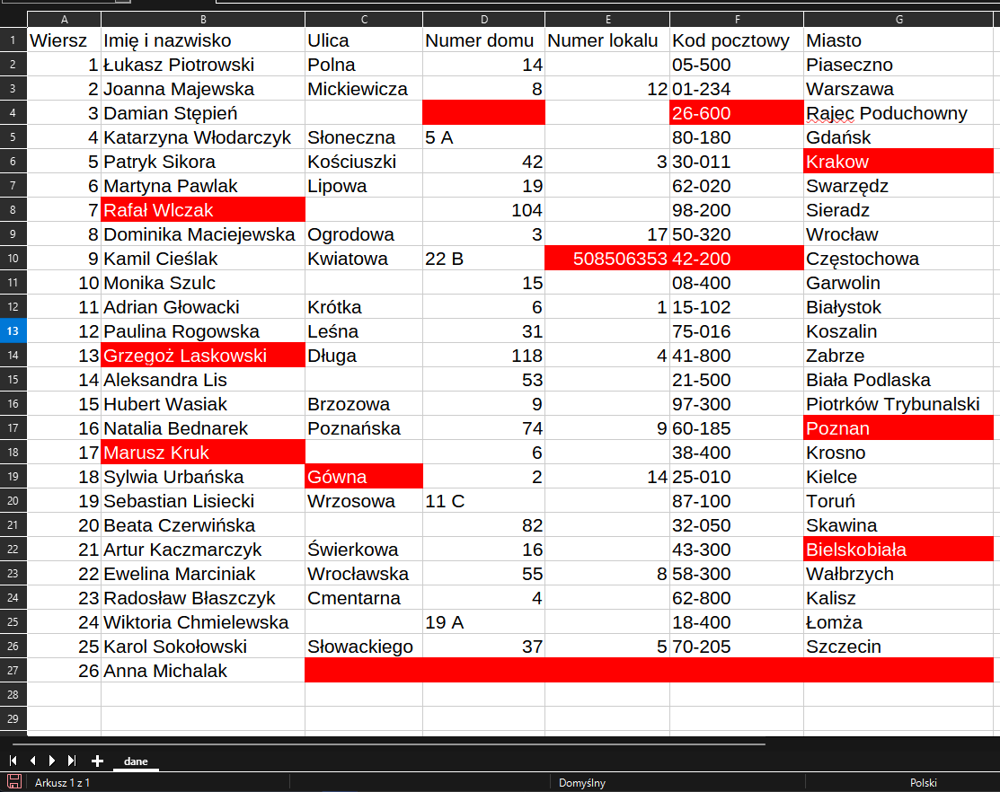
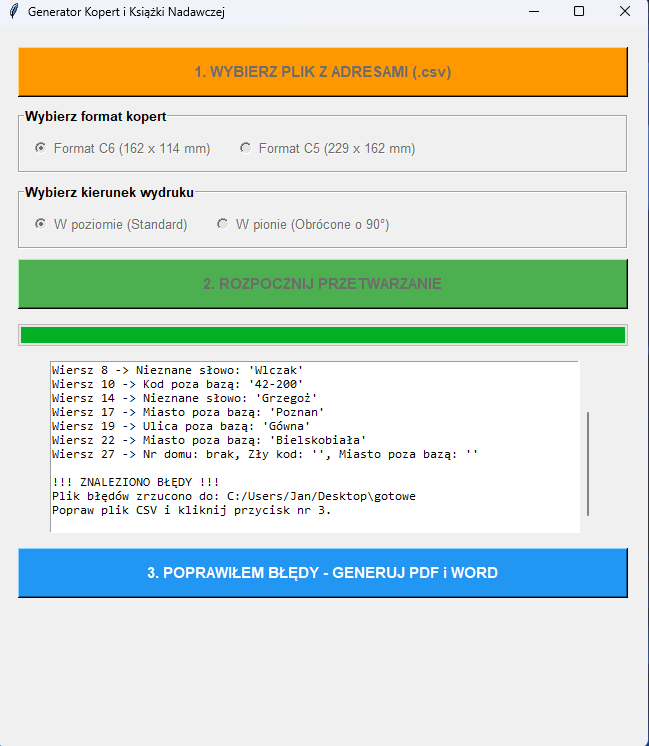
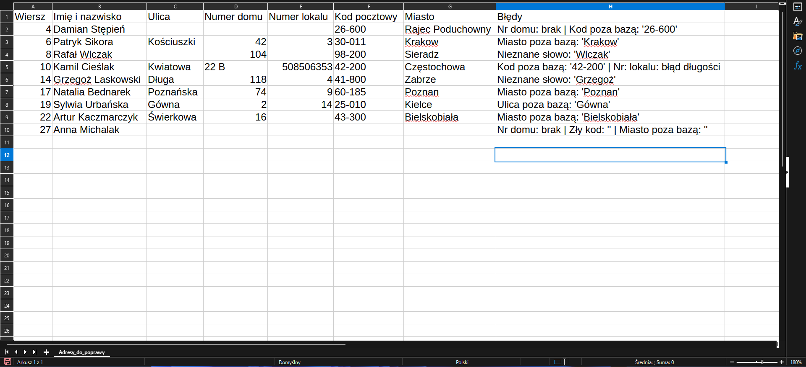
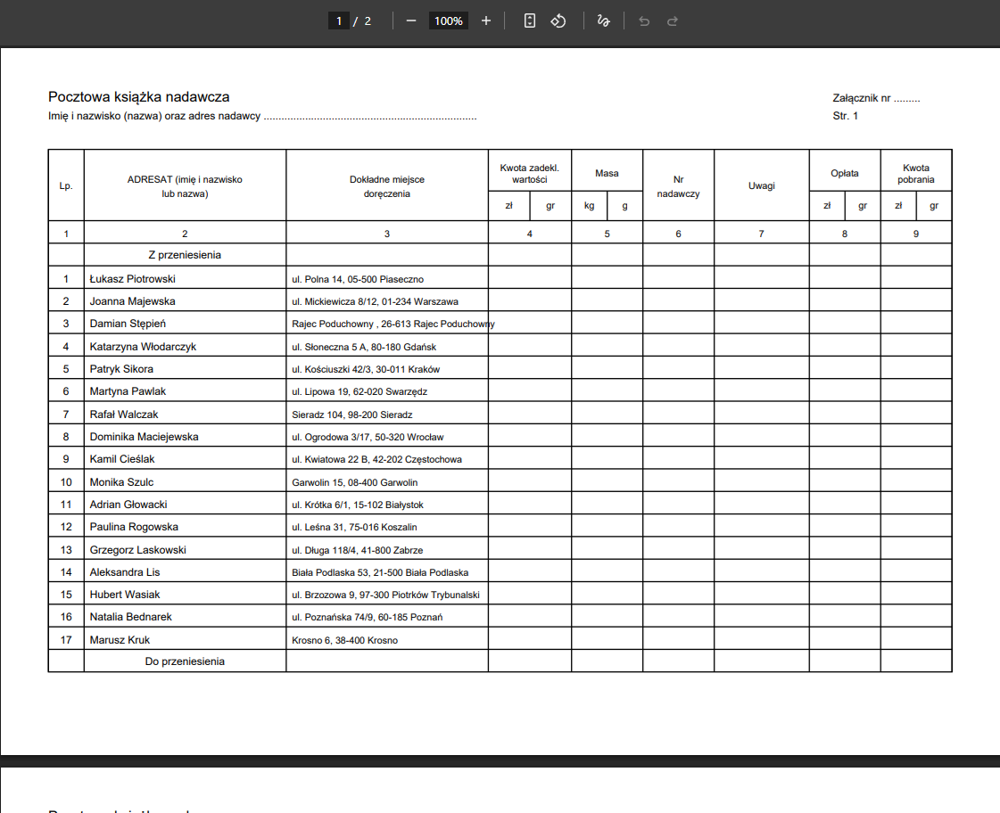

Generator Korespondencji Masowej
Samodzielna aplikacja desktopowa (.exe) automatyzująca wysyłkę korespondencji masowej. Zastępuje kilkanaście godzin ręcznego przepisywania danych z arkuszy Excel, generując gotowe pakiety pocztowe w zaledwie kilka minut.
1. Nieuporządkowana baza wejściowa
Surowy plik CSV z listą odbiorców. Zawiera typowe błędy uniemożliwiające automatyczną wysyłkę: literówki w nazwach miejscowości, brakujące numery domów, zniekształcone kody pocztowe oraz nieujednolicone formatowanie danych.

2. Walidacja słownikowa i kolejka wyjątków
Program weryfikuje adresy w oparciu o bazy referencyjne (m.in. TERYT). Poprawne rekordy są przetwarzane w tle, a niejednoznaczne wpisy trafiają do osobnego raportu CSV z precyzyjną informacją o przyczynie błędu (np. kod poza bazą, błędna nazwa ulicy), izolując problemy bez przerywania całego procesu.


3. Scalenie po korekcie
Po szybkiej korekcie wyłącznie błędnych pozycji w pliku pomocniczym, narzędzie łączy poprawione dane z główną bazą i natychmiast przechodzi do generowania paczek z dokumentami.

4. Gotowe pakiety produkcyjne
Na wyjściu program generuje spersonalizowane szablony kopert w formacie .docx (gotowe do druku w wybranym układzie) oraz kompletną książkę nadawczą w formacie PDF, zgodną z obowiązującymi standardami Poczty Polskiej.

